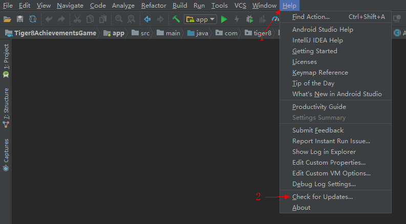

AndroidStudio3.0刚刚发布两天,便迫不及待的升级了,升级前也明白这次的版本跨度较大,老项目可能存在很多的问题,没成想还是从中午折腾到了晚上十点.不过结果还不错,成功的跑起来了项目. 列出踩过的坑,希望后面要升级的小伙伴遇到类似的问题可以做个参考;
1.升级安装
两种升级方法:
- 直接用自带的更新工具
操作步骤: >菜单栏>Help>Check for Updates..(前提网络要绝对的畅通,你懂的)
 - 手动的下载新的版本
下载地址https://developer.android.google.cn/studio/archive.html#android-studio-3-0?utm_source=androiddevtools.cn&utm_medium=website